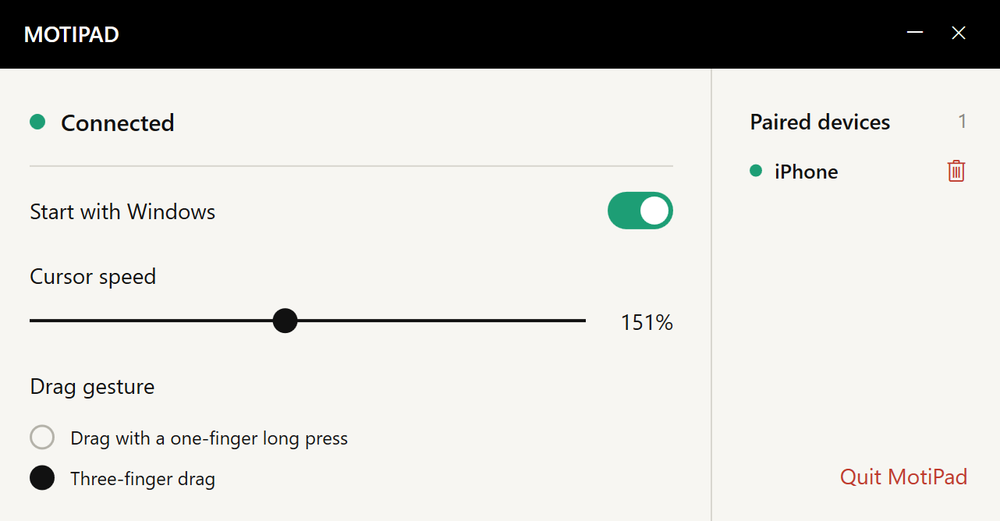

LESS SPACE
No room for a mouse?
Your fingers still have room.
No need to clear a surface for a mouse to travel. Slide your fingers across your phone to move the computer’s cursor.
Less desk space. One less accessory.
Familiar gestures, right on your phone.


A café table, a temporary workspace, or a day when you want to travel light. Bring your touchpad along on the iPhone you already carry.
No need to clear a surface for a mouse to travel. Slide your fingers across your phone to move the computer’s cursor.
Prefer to leave the mouse or touchpad at home? Give the iPhone you already carry one more job.
Move, tap, and scroll with two fingers.
A simple touch surface that keeps you focused on the task.
Dragging a file across a big screen and reaching the edge of your phone? Briefly lift your finger, put it back, and carry on dragging.
Pair your regular computers, then choose which one to control from the menu on your phone. Change workspaces and keep going.
Add your regular computers to the paired list.
Switch the computer you’re controlling from the menu.
Control one computer at a time.
Open MotiPad and use your phone’s screen to move, scroll, and drag.
Install the receiver and pair on the same local network. Adjust cursor speed and drag gestures on the computer.
Download and install the Windows receiver to use with MotiPad on your iPhone. The iPhone App Store link will be added after launch.
For help, bug reports, or product suggestions, send us an email.
eziojobs01@gmail.com